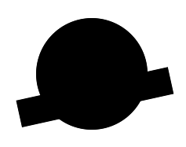
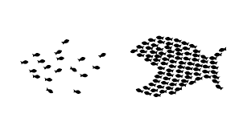

Beispiel 1
Eine Figur wird demnach so wahrgenommen, dass sie in einer möglichst einfachen Struktur resultiert (="Gute Gestalt"). Solche Prägnante Formen oder "gute Gestalten" sind beispielsweise ein Kreis, ein Dreieck oder ein Rechteck. Das sind einfach aufgebaute Gestalten, die uns im täglichen Leben begegnen. Diese haben wir in unserem Gedächtnis verinnerlicht und werden daher schnell wiedererkannt.

Beispiel 2
Beim Beispiel oben rechts sehen sie wahrscheinlich einen Kreis und ein Rechteck, die sich überschneiden, wahr, obwohl eigentlich eine zusammenhängende schwarze Fläche gezeigt wird.

Beispiel 3
In diesem Beispiel kann man sehen, wie das Gesetz nicht richtig ausgeführt wird. Die linken Fische sind zwar Fische, allerdings sind sie in ihrer Position nicht zuordnebar. Es sieht aus wie eine zufällige Anordnung eines Schwarms